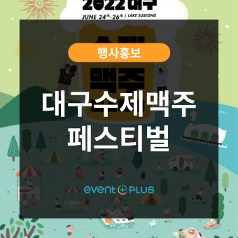
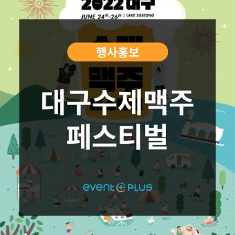

1. 치맥 페스티벌
대구에서 가장 유명한 페스티벌로, 매년 대구치맥페스티벌 조직위원회에서 시행하는 치킨과 맥주를 즐기는 테마의 페스티벌이다
매해 다양한 가수, 아티스트들과 함께 여러가지 브랜드의 치킨과 맥주를 즐길 수 있는 대구의 대표적인 축제
1. Chicken-Beer festival
It is the largest festival which is held every year
with the invitation of various singers and artists where you can taste some chicken's of various brands with performances
 

2. 수성못 페스티벌
낮에는 거리의 버스킹, 전시회가 펼쳐지고 저녁에는 불꽃쇼, 가수들의 무대가 이어지는 아름다운 수성못의 분위기를 느낄 수 있는 낭만적인 페스티벌
Suseong-mot festival
There will be street performance and exhibition in daytime and performance of the singer and fireworks at night.